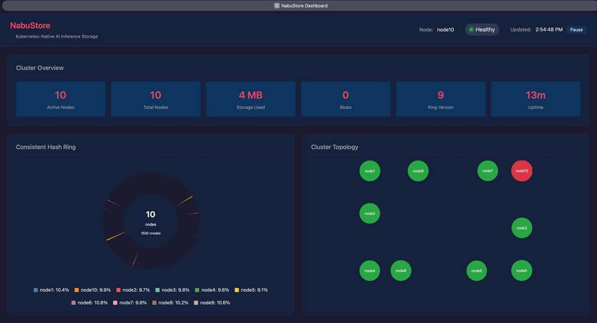

Kubernetes-native AI inference storage built for horizontal scalability. Handles model weights, KV cache blobs, and checkpoints across distributed GPU clusters with sub-microsecond metadata lookups.

Live cluster dashboard with consistent hash ring, topology graph, and real-time node metrics
They share the word "storage." They share almost nothing else.
| Dimension | Traditional Enterprise Storage | AI-Native Storage |
|---|---|---|
| I/O Pattern | Random reads and writes. Applications depend on in-place modification, POSIX locking, and byte-range updates. | Write-once / read-many. Model weights, checkpoints, and training samples are immutable blobs. No random writes needed. |
| Protocol | NFS, iSCSI, SMB — designed for spinning disk over TCP. Kernel-mediated I/O with multiple context switches per operation. | NVMe-oF over RDMA, GPUDirect Storage, CXL. Kernel-bypassed via DPDK/SPDK. Zero-copy from NVMe directly into GPU HBM. |
| Latency Target | Milliseconds acceptable. HDD-era designs persist even on all-flash arrays due to legacy software stack overhead. | Microseconds required. GPU costs $30k+ — every microsecond of idle GPU is measurable dollar waste. Sub-250µs is baseline. |
| Bottleneck | IOPS and capacity. Scale-up storage controllers dominate. Single-threaded I/O stacks inherited from HDD era. | Bandwidth and parallelism. Thousands of GPU cores demand simultaneous access. Scale-out across commodity nodes is mandatory. |
| New Primitives | No concept of KV cache, embedding vectors, or tensor blobs. Filesystems expose bytes and blocks — not AI-meaningful data units. | KV cache offload/sharing, vector embedding storage, content-addressable tensor blobs, and GPU-DMA-aligned chunking are first-class. |
| Hardware Model | Proprietary controllers (Pure DirectFlash, NetApp ONTAP ASIC). Vendor lock-in is a feature — margins depend on it. | Commodity NVMe + RDMA NICs on standard x86. Software defines all performance. Hardware is fungible and replaceable. |
| Moat | Hardware, support contracts, installed base inertia. Winner-take-most dynamics already resolved (NetApp, Pure, Dell EMC). | Software architecture, AI-primitive integration (NIXL, CUDA, PyTorch), protocol leadership. Category not yet decided. |
Built from first principles — not adapted from general-purpose storage.
Deep dives into each component of the storage stack, from GPU memory to NVMe, with interactive diagrams and protocol walkthroughs.
The complete blueprint: five design principles, full software stack (blob orchestration through SPDK/DPDK to hardware), four node types (storage, GPU, metadata, management), three network fabrics, critical data paths with latency budgets, and cluster sizing for 1k-GPU deployments.
Complete hardware and software stack of a NabuStore node: vLLM integration, CXL-backed Robin Hood index, content-addressed blob store, DHT ring with 150 vnodes, and the three-plane network topology (GPU IB, replication Ethernet, inference).
Zero-copy GPU blob retrieval: NIXL request triggers DHT lookup, NVMe-oF target registration, GPU HBM3e registered as RDMA memory region, then direct RDMA Write from NVMe DMA buffer through InfiniBand NDR 400 Gb/s fabric to GPU memory. No CPU copies.
Userspace replication using DPDK poll-mode drivers: EC shards encoded with ISA-L, wrapped in huge-page DMA buffers, dispatched via rte_eth_tx_burst over ConnectX-7 200 GbE. Dedicated replication VLAN on Arista 7060CX3 fabric, zero-copy receive path.
Step-by-step erasure-coded write: 4 MB blob split into 4 data shards, ISA-L AVX-512 GF(2^8) Cauchy encoding produces 2 parity shards, DHT ring maps each shard to a distinct node, SPDK blobstore writes via PCIe 5.0 DMA, 6-way ACK confirms stripe durability.
Three-tier extensibility model: Tier 1 static registry (init()-based, zero overhead), Tier 2 gRPC out-of-process (vendor binaries over UDS), Tier 3 hardware auto-detection. Server vendors supply drivers without modifying core code. Full API reference and vendor plugin guide.
Three-tier caching from DRAM through CXL memory to NVMe, with automatic promotion and demotion based on access patterns.